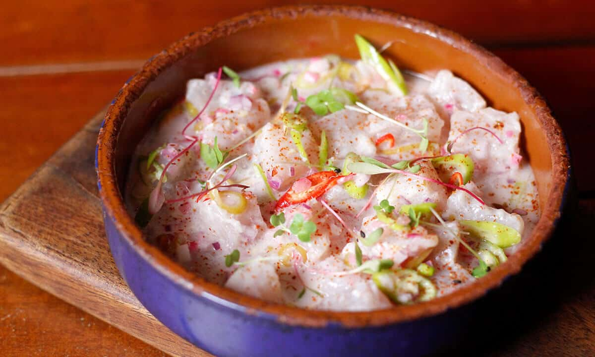
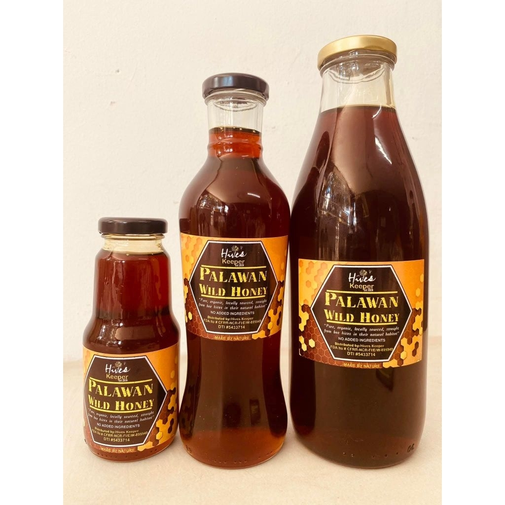
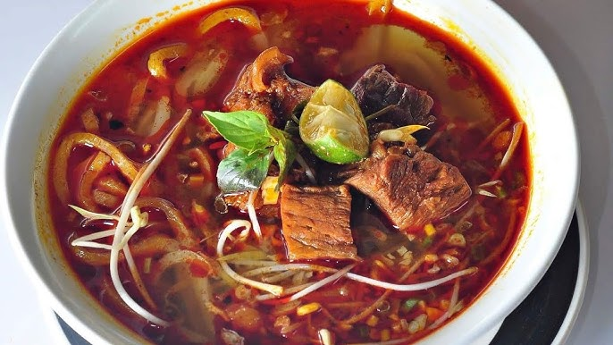
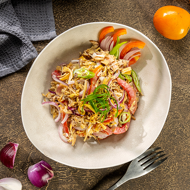

Food & Cuisine
Taste the flavors of Palawan's land and sea
Taste the flavors of Palawan's land and sea

Palawan's most famous (and adventurous) delicacy — a wood-boring mollusk that lives inside rotting mangrove logs. Eaten fresh with vinegar and chili, it has a creamy, oyster-like taste. A rite of passage for visitors.

A uniquely Palawan twist on the Filipino classic — crocodile meat (from licensed farms) chopped and sizzled with onions, chili, and calamansi. Leaner and more delicate than pork, with a distinctive earthy flavor.

Palawan's version of ceviche — ultra-fresh fish cured in coconut vinegar, ginger, onions, chili, and calamansi. Because the fish comes directly from local fishers, the freshness here is unmatched anywhere in the Philippines.

The Batak indigenous people harvest wild honey from forest trees using ancient techniques. This raw, unprocessed honey has a complex floral flavor and is prized for its medicinal properties. Available at Puerto Princesa markets.

A legacy of Palawan's Vietnamese refugee community who arrived in the 1970s — a fragrant rice noodle soup with fresh herbs, bean sprouts, and either seafood or chicken broth. Found in dedicated Vietnamese restaurants in Puerto Princesa.

Banana blossom salad — shredded banana heart boiled and dressed with vinegar, garlic, onions, and local spices. A traditional indigenous dish that showcases Palawan's forest bounty and has gained popularity as a healthy, vegan-friendly option.
The most famous restaurant in Puerto Princesa — famous for crocodile sisig, tamilok, and wild game dishes. An essential Palawan experience.
Puerto Princesa
A charming café and gallery in El Nido town serving fresh local seafood, Filipino favorites, and excellent coffee with Artisan crafts for sale.
El Nido Town
A beloved beachside restaurant on an island near Coron, famous for its live seafood grilled on the beach, including fresh crab, prawns, and lapu-lapu.
Coron
An eco-friendly restaurant in Port Barton specializing in freshly caught reef fish, coconut dishes, and local vegetables from their organic garden.
Port Barton